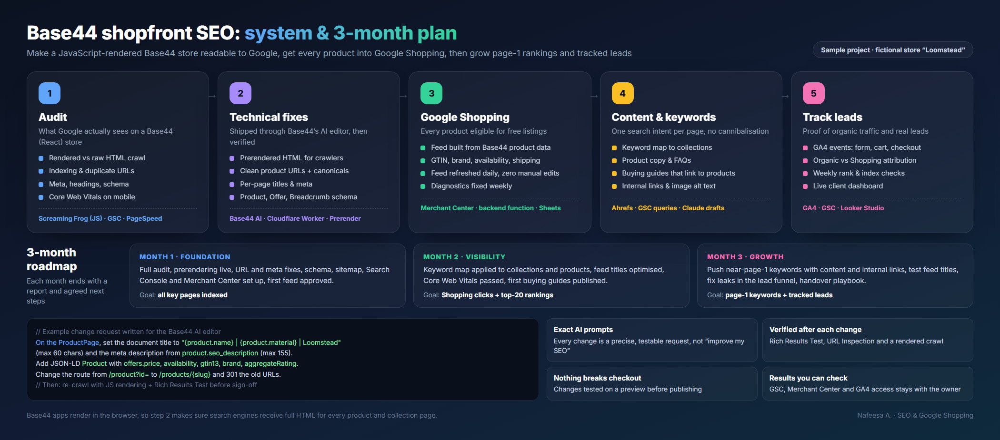
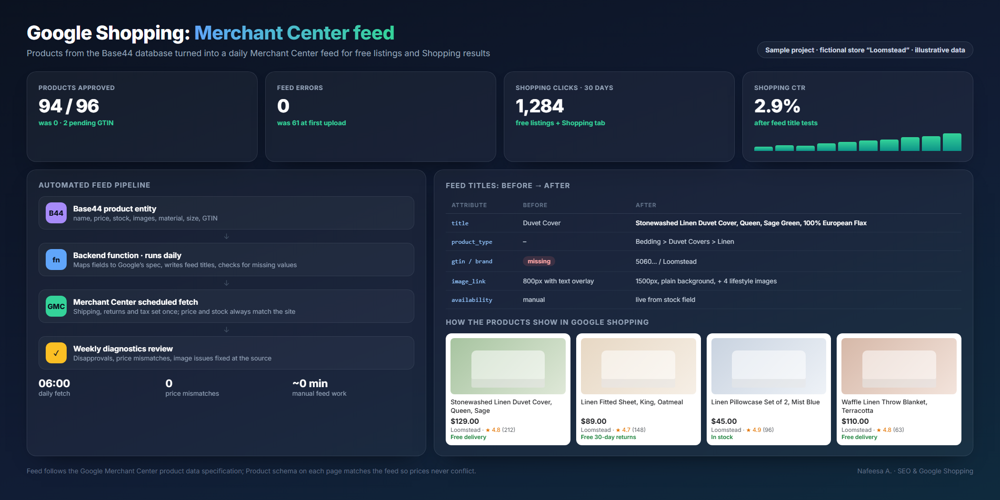
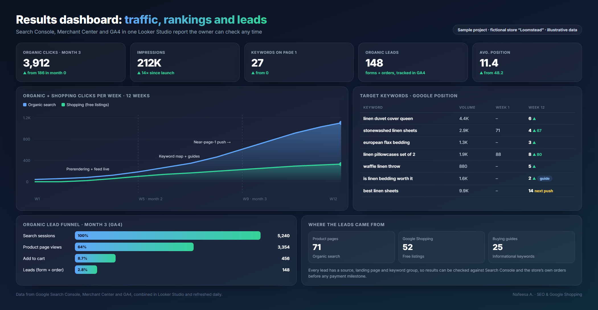
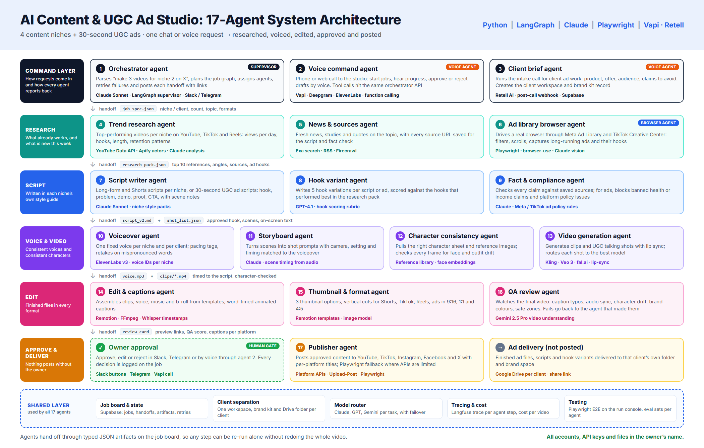

The system and 3-month roadmap, with an example of a precise change request for the Base44 AI editor. Audit: what Googlebot received before and after, the issues found and fixed, Core Web Vitals and indexing.
Audit: what Googlebot received before and after, the issues found and fixed, Core Web Vitals and indexing.
Google Shopping: a daily feed built from the store’s own product data, and how products appear in Shopping.
Results dashboard: traffic, rankings and leads by source, in one Looker Studio report the owner can check.The challenge
The owner launched a new store with Base44, an AI app builder, and wanted products in Google Shopping and key pages on page 1. Base44 sites are React apps that build each page in the browser. People see a finished store, but a crawler’s first fetch can be an empty page with one title, “Base44 App”, on every URL. Product links used ?id= parameters, there was no sitemap or structured data, and mobile pages were slow. The owner also wanted proof: real organic traffic and leads, not just a list of changes.
The approach
The plan works in the order Google needs: first make every page readable and indexable, then get products into Shopping, then grow rankings with content, and track leads from day one. Because the owner has paid access to Base44’s AI, most site changes are made through the AI editor, using exact, testable change requests that I write and then verify with a rendered crawl, URL Inspection and the Rich Results Test, so nothing is left to “improve my SEO” guesswork.
How it works
- Audit (week 1)Screaming Frog crawl with JavaScript rendering on and off, Search Console indexing report, PageSpeed on mobile, structured data and duplicate URL checks. Every issue gets a page count, impact and fix.
- Make pages readableA Cloudflare Worker on the custom domain serves prerendered HTML to search engine bots, so Google gets the full product page, title, description and schema on the first fetch.
- Fix URLs, meta and schemaProduct routes changed to
/products/{slug}with 301 redirects and canonicals. Titles and meta descriptions are built from the product data. JSON-LD Product, Offer, Review and BreadcrumbList on every product page. - Google ShoppingA backend function turns the Base44 product entity into a Merchant Center feed every day: optimised titles, product type, GTIN, brand, images, price and live stock. Shipping and returns are set once in Merchant Center, and the page schema always matches the feed.
- Keywords and contentA keyword map gives every collection and product one main search intent. Thin collection pages get intro copy and FAQs, and buying guides answer “is it worth it” and “best” searches and link to products.
- SpeedWebP images at the right size, a preloaded hero image and fewer layout shifts to pass Core Web Vitals on mobile.
- Track and reportGA4 events for lead forms, add to cart and orders, split by organic search and Shopping. Search Console, Merchant Center and GA4 come together in a Looker Studio dashboard the owner can open any time.
3-month roadmap
- Month 1, foundation: audit, prerendering, URLs, meta, schema, sitemap, Search Console and Merchant Center set up, first feed approved
- Month 2, visibility: keyword map applied, feed titles optimised, Core Web Vitals passed, first buying guides published
- Month 3, growth: push keywords sitting just below page 1, test feed titles, fix leaks in the lead funnel, hand over a playbook
Why this works on Base44
- Solves the real problem with AI-built sites: content that only exists after JavaScript runs
- Uses the owner’s Base44 AI access for changes, with every change specified and verified
- Feed and schema come from the same product data, so prices and stock never conflict
- Everything stays in the owner’s accounts: Search Console, Merchant Center, GA4 and Cloudflare
- Results can be checked against Search Console and the store’s own orders before each payment milestone
Expected outcome (illustrative)
- Indexed pages from 13 to 139 of 148 after month 1
- 94 of 96 products approved in Merchant Center
- 27 keywords on page 1 and 148 tracked organic leads by month 3
Sample project with a fictional store. Figures are illustrative, to show how results are measured and reported.
Other projects

SEO title and meta, compliant copy, FAQ, alt text, Product schema and conversion fixes.

Ad Library research, written hypotheses and AI image and video ads with a 7-day readout.

A team of AI agents that researches, scripts, voices, edits, checks and posts videos.